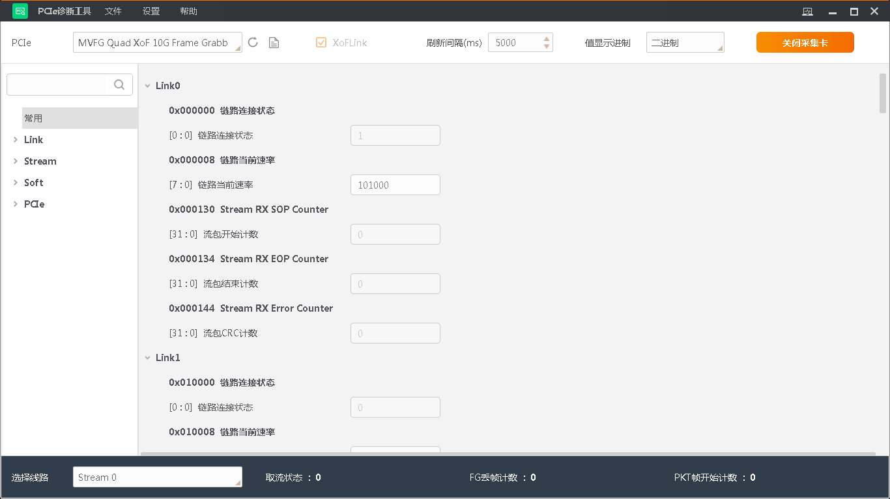

诊断监视
通过连接采集卡并进行采集，可实时查看采集卡PCIe调试状态信息的内存值。
在界面上方的PCIe处选择相应型号的采集卡，单击打开采集卡，如下图所示。

图 1 诊断监视通过左侧的搜索框可对调试信息英文名称和地址进行搜索，单击 即可进行精准搜索；常用页可显示常用的调试状态相关信息，并支持搜索中文和英文名称。
即可进行精准搜索；常用页可显示常用的调试状态相关信息，并支持搜索中文和英文名称。
工具可对采集卡的Link、Stream、Soft和PCIe4种类型的调试状态信息进行实时检测，介绍如下：
-
Link：连接传输的寄存器数据等；
-
Stream：数据流等；
-
Soft：Soft软件、SDK和串口配置相关寄存器等；
-
PCIe：传输协议以及接口相关、状态和计数等。
说明
单击关闭采集卡，可停止采集状态。